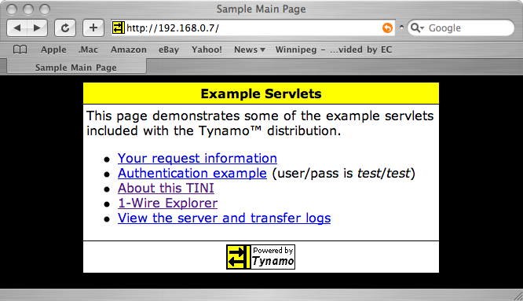

| Get Started Right Away |
If you want to deploy the Tynamo™ server and try it out right away, without having to build and configure your own servlets, then this guide is for you. There are a number of example servlets already included in the default build process.
Steps
- First, install the latest versions of Ant and Jakarta Commons/Net. There are some brief instructions in the Tutorial.
-
Next, ensure your TINI is properly set up, and then modify the
deploy.properties file to point to the TINI's address.
For example, if the address is 192.168.0.7, then change
the
deploy.serverline to read:
If the login and password are something other than root and tini, then change thedeploy.server=192.168.0.7
deploy.useridanddeploy.passwordlines as well. -
On the command line, change to the directory where this distribution
was installed and type:
If Ant was correctly installed, then the build.xml script will be executed and a binary named webserver.tini will be created in the tini/bin/ directory, after which all the necessary files will be transferred to the TINI.ant clean build deploy
-
Lastly, telnet to the TINI and type:
The webserver will start and listen to requests on port 80. Try navigating to the following URL with your browser, after replacing the address with the correct value:source /web/bin/WebServer
You should see a page similar to the following:http://192.168.0.7/

Email: shawn@pobox.com
© 2002-2004 Shawn Silverman